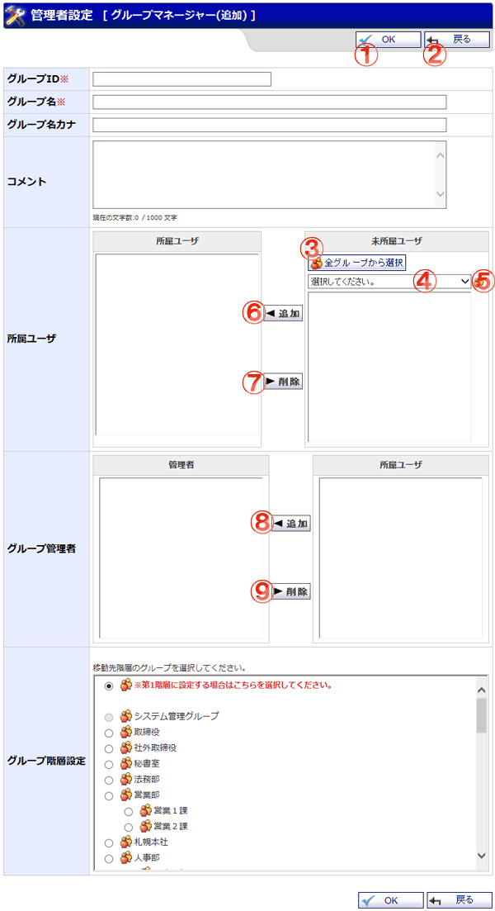

グループの追加画面です。

機能説明
OKボタングループマネージャー（追加）確認画面へ遷移します。入力内容に不備がある場合エラーメッセージが表示されます。 |
戻るボタン遷移元の画面へ遷移します。 |
|---|---|
全グループから選択ボタンポップアップで全グループから選択画面が開きます。 |
グループ選択コンボグループを選択します。選択したグループに所属するメンバーが未所属ユーザに表示されます。 |
グループボタンポップアップでグループ選択画面が開きます。 |
所属ユーザ追加ボタン選択した未所属ユーザが、所属ユーザ一覧に追加されます。 |
所属ユーザ削除ボタン選択した所属ユーザが削除され、未所属ユーザ一覧に表示されます。 |
グループ管理者追加ボタン選択した所属ユーザが、グループ管理者に追加されます。 |
グループ管理者削除ボタン選択したグループ管理者が削除され、所属ユーザ一覧に表示されます。 |
表示・入力項目説明
グループID
グループIDを入力します（15文字以内）。
グループ名
グループ名を入力します（50文字以内）。
グループ名カナ
グループ名カナを入力します（75文字以内）。
コメント
コメントを入力します（1,000文字以内）。
所属ユーザ
グループに所属させたいユーザを未所属ユーザリストから選択し追加ボタンをクリックすると、所属ユーザリストに反映されます。
所属ユーザリストから削除したい場合は削除したいユーザを選択し削除ボタンをクリックします。
グループ管理者
グループ管理者に所属させたいユーザを所属利用者リストから選択し追加ボタンをクリックすると、グループ管理者リストに反映されます。
グループ管理者リストから削除したい場合は削除したいユーザを選択し削除ボタンをクリックします。
グループ階層設定
グループの階層を選択します。第１階層に設定する場合は「※第1階層に設定する場合はこちらを選択してください。」と書かれたボタンを選択します。